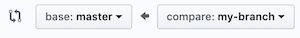

Git Work Flow
When you work with a team and you are responsible for an individual piece of a
project, you usually want to create your own branch for that piece.
Later, when you are done, you would merge your branch with the main project.
This is what a typical workflow could look like:
- Pull the shared repository to your local machine using clone command, like so:
git clone url_of_the_repo_to_clone
This command is going to create a local clone of the remote repository.
- Create a new branch out of it.
git checkout -b new_branch
- While you work on your new branch, keep adding and committing to your local branch the changes you made.
- When you are done, you can push your branch to the remote repository (in this example called
origin)
git push -u origin new_branch
Note that this step will create a remote new_branch and link it to your local new_branch.
- Now you have to go to GitHub where your team project is and open a pull request. Pull request is your way of asking for your local branch you pushed to be merged with the remote branch, in this case, the remote master branch.
- On GitHub.com, go to the group project repo and click New pull requests button.
- Click New Pull Request button.
- On the Compare Branches Page, select the second drop-down on the right (the compare one) and choose the new branch you pushed.

- On the right-hand side request a reviewer (both of your teammates).
- Leave a comment with your changes and click Create pull request.
- When your teammates review your code, they can offer suggestions or point out any errors in your code.
Here is how you and other teammates can give each other suggestions as reviewers:
- In GitHub, in the repo you share as a team, click on the Pull requests tab and select the pull request of your teammate.
- Click on the Files changed tab.
- Select the file you want to review.
- Click the plus symbol that should appear near the start of any line of the code and start the review process - click Start a review button.
- Add any comments or suggest changes. They will all be marked as pending.
- When you are ready to submit all these pending comments to share them with your team, use the button on the right (Review changes) that will let you submit the review as a Comment, as an Approve or, if there are errors in the code, you can select Request changes before you approve the merge.
- See this short video Code Review on GitHub that shows these review steps.
- Once you all agree that your
new_branch is ready to be merged, you can merge it into the remote master branch (if you have the proper permissions for this particular project to do so) using the green merge button on the Pull requests tab.
- Now you can delete your branch from the GitHub repo of your team project. To do so, click on Branches tab, choose Yours button and delete the branch.